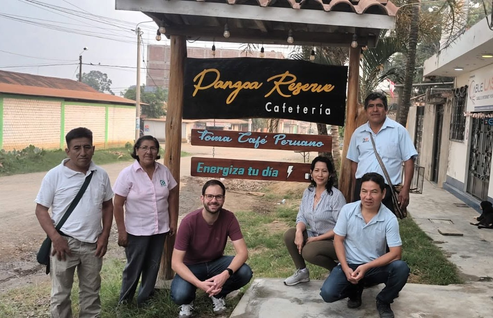
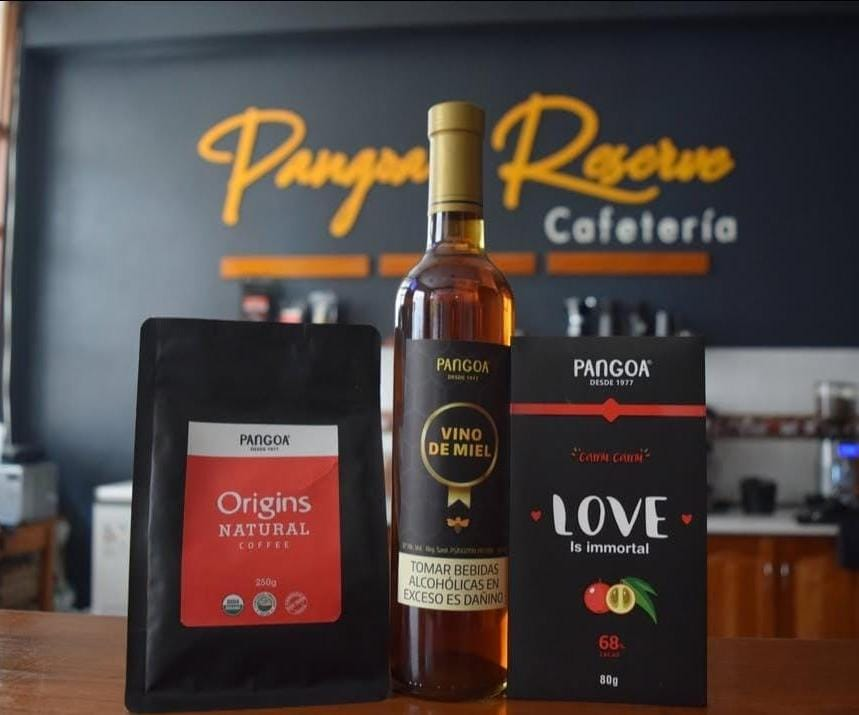

PANGOA RESERVE®
Nuestra historia
Café, cacao y tradición de la Selva Central.De la historia de Pangoa a Pangoa Reserve
La historia comienza el 2 de octubre de 1977, cuando 50 agricultores cafetaleros se reunieron con la iniciativa de formar una cooperativa en el distrito de Pangoa. Así nació la Cooperativa Agraria Cafetalera Pangoa.
Durante los siguientes años, la cooperativa fue creciendo junto a sus productores. El trabajo se centró en mejorar la producción, la calidad y la comercialización del café y, posteriormente, también del cacao.
Este crecimiento permitió desarrollar nuevos procesos y espacios relacionados con los productos de la cooperativa. Con el tiempo, el trabajo dejó de estar solamente enfocado en la producción y comercialización y también comenzó a acercarse directamente al consumidor.
Para 2018 ya se registraba la existencia de un laboratorio de café, un tostador y una cafetería vinculados a la cooperativa. En este proceso se encuentra el origen de Pangoa Reserve Cafetería, un espacio pensado para acercar el café y otros productos de Pangoa a quienes los consumen.
Así, Pangoa Reserve forma parte de un camino que comienza con los productores, continúa con el trabajo de la cooperativa y llega finalmente hasta la experiencia de disfrutar una taza de café.


Del productor a la taza
Como parte de este camino, la cooperativa desarrolló espacios para trabajar y mostrar la calidad de sus productos. Para 2018 ya se registraba la existencia de un laboratorio de café, un tostador y una cafetería.
Pangoa Reserve Cafetería representa ese espacio donde el público puede acercarse al café y cacao de la zona, conocer sus productos y disfrutar diferentes preparaciones.
La cafetería permite acercar al consumidor al trabajo que existe detrás de cada producto, desde el origen de los granos hasta su preparación.
Certificaciones y trayectoria
Estos reconocimientos y certificaciones corresponden a la Cooperativa Agraria Cafetalera Pangoa y a su trabajo con los productores. Se muestran como parte de la historia y trayectoria que acompaña a Pangoa Reserve Cafetería.
Orgánico
Certificación relacionada con la producción orgánica de la cooperativa.
Fairtrade
La cooperativa obtuvo la certificación de Comercio Justo.
SPP
Forma parte de las certificaciones internacionales que presenta la cooperativa.
Bird Friendly
Certificación relacionada con prácticas de producción compatibles con la protección del hábitat.
Vínculos con otros mercados
La Cooperativa Agraria Cafetalera Pangoa comercializa sus productos y mantiene vínculos con empresas y organizaciones relacionadas con el café y cacao en diferentes mercados. Entre los clientes que aparecen en la información oficial de la cooperativa se encuentran:
Una historia que también ha llegado al exterior
El trabajo de la cooperativa también ha generado espacios de intercambio con personas y profesionales relacionados con el café sostenible de diferentes países. En 2016, por ejemplo, Esperanza Dionisio Castillo participó junto con 40 productores en un encuentro con socios tostadores de Cooperative Coffees en Estados Unidos. También existen registros de visitantes y profesionales extranjeros interesados en conocer el trabajo de Pangoa, sus plantaciones y sus procesos de producción.
Lo que nos representa
MISIÓN
Promover una gestión eficiente, comercial, empresarial y asociativa, basada en la formación solidaria, el conocimiento especializado y el uso adecuado de tecnologías y servicios.
VISIÓN
Ser una cooperativa con presencia global, conocimiento especializado de la agricultura ancestral, valor agregado y desarrollo socioeconómico de sus asociados, manteniendo la sostenibilidad ambiental y el respeto por sus costumbres y tradiciones.
OBJETIVO
Fortalecer la organización para mejorar los ingresos económicos y elevar el nivel de vida de sus socios, impulsando al mismo tiempo el desarrollo cooperativo.